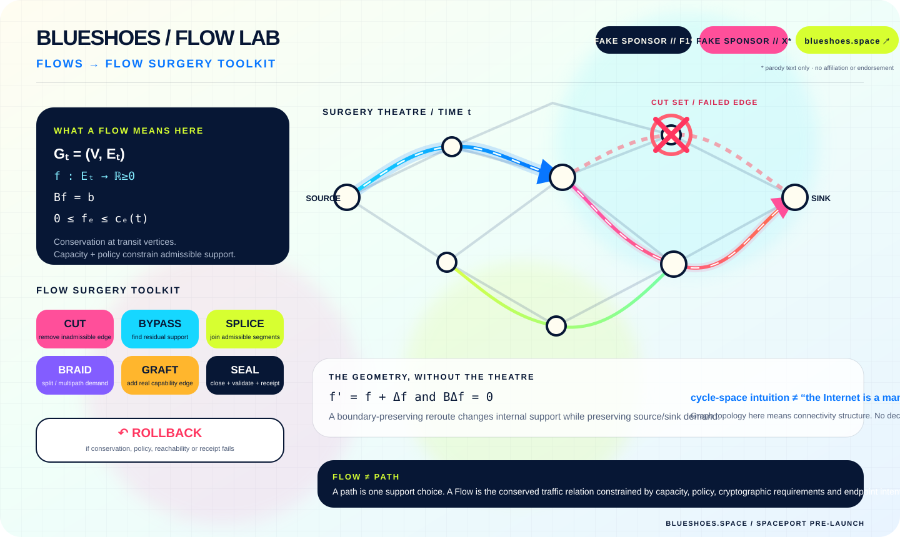

blueshoes.space_
FAKE SPONSOR // F1*FAKE SPONSOR // X*POST-OPENWRTPOST-DPI
FLOW
SURGERY
One tiny routing brick. A time-varying graph. Conserved Flows. Bounded topology mutations. Rheknel keeps the scalpel away from the arteries.

FLOW = conserved relation, not one sacred path.SURGERY = CUT · BYPASS · SPLICE · BRAID · GRAFT · SEAL · ROLLBACK.SPACEPORT / PRE-LAUNCH
* “F1” and “X” are parody text labels only. No affiliation, sponsorship, endorsement or copied logos. GitHub Pages + DNS must be activated separately before this custom domain is actually serving this page.